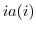

Next: psb_spins Insert
Up: Data management routines
Previous: psb_cdbldext Build
Contents
call psb_spall(a, desc_a, info, nnz)
- Type:
- Synchronous.
- On Entry
-
- desc_a
- the communication descriptor.
Scope:local.
Type:required.
Intent: in.
Specified as: a structured data of type descdatapsb_desc_type.
- nnz
- An estimate of the number of nonzeroes in the local
part of the assembled matrix.
Scope: global.
Type: optional.
Intent: in.
Specified as: an integer value.
- On Return
-
- a
- the matrix to be allocated.
Scope:local
Type:required
Intent: out.
Specified as: a structured data of type spdatapsb_Tspmat_type.
- info
- Error code.
Scope: local
Type: required
Intent: out.
An integer value; 0 means no error has been detected.
Notes
- On exit from this routine the sparse matrix is in the build
state.
- The descriptor may be in either the build or assembled state.
- Providing a good estimate for the number of nonzeroes  in
the assembled matrix may substantially improve performance in the
matrix build phase, as it will reduce or eliminate the need for
(potentially multiple) data reallocations.
Next: psb_spins Insert
Up: Data management routines
Previous: psb_cdbldext Build
Contents